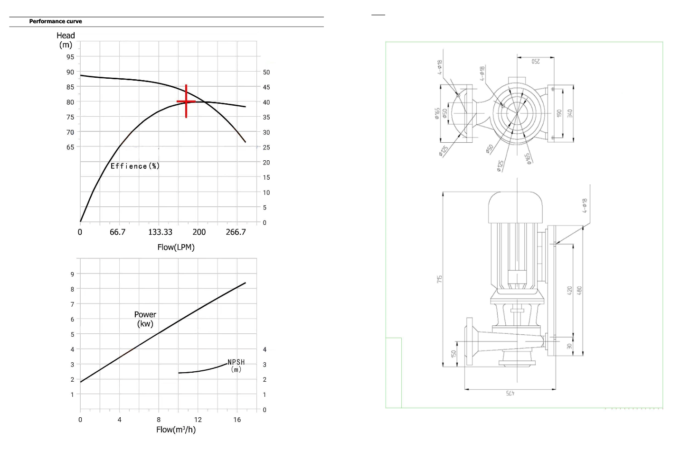

FIRE PUMP TECHNICAL DETAILS
Close Couple Centrifugal Monoblock Fire Pumps
Model: SIFPISW-50-250A
Structure: End suction pumpInlet Diameter: DN50 Flange
Outlet Diameter: DN50 Flange
Pressure rating for connection: PN16
Flow: 10.8m3/h (180 LPM)
Head: 80m
Speed: 2900rpm
NPSHr: 2.3m
MATERIAL
Pump Case: Cast ironPump Body
Inlet: Cast iron
Outlet: Cast iron
Shaft: Stainless steel
Bearing: Bearing steel
Base: Carbon steel
DRIVE ENGINE
Type: Asynchronous MotorPower: 7.5kW
Rated Current: 14.4A
Speed: 2900rpm
Voltage: 380V~440V
Frequency: 50Hz
Insulation class: F
Protection Degree: IP55
Technical Details
Long Barrel Centrifugal Monoblock Fire Pumps
Model: SIFPIS-100-65-250A
Structure: End suction pump
Inlet Diameter: DN100 Flange
Outlet Diameter: DN65 Flange
Pressure rating for connection: PN16
Impeller Diameter: 251mm Flow:
72m3/h (1200 LPM)
Head: 80m
Speed: 2900rpm
NPSHr: 4.4m
MATERIAL
Pump Case: Cast ironPump Body
Inlet: Cast iron
Outlet: Cast iron
Shaft: Stainless steel
Bearing: Bearing steel
Base: Carbon steel
DRIVE ENGINE
Type: Asynchronous MotorPower: 37kW
Rated Current: 67.4A
Speed: 2900rpm
Voltage: 380V~440V
Frequency: 50Hz
Insulation class: F
Protection Degree: IP55
Technical Details
Diesel Engine Driven Fire Pumps
- Installations of these pumps would ensure the safety of human life, buildings, and expensive equipment and plants. Safeinox fire pump set shall be used only where a positive suction is provided.
- Diesel engine as well as electric motor driven pump. Back pull-out design which simplifies inspection and maintenance without disturbing pipe work.
- The pump casing shall have material of construction of Cast Iron FG 260 (standard supply), CF8, CF8M, axial suction, and radial discharge port, dynamically balanced impeller, steel shaft, and stainless steel shaft sleeve.
- The pump shaft sealing will be by either gland packing or mechanical shaft seal suitable for 16 bar or 25 bar pressure rating based on shut off pressure of the pump.
- The pump shall have closed type impellers and bowl diffusers with material of construction stainless steel AISI 304 sheet metal, pump shaft shall be made of stainless steel AISI 316 material.
- The pump shall have a back pullout design so as to enable the rotating parts to be removed and serviced without dismantling the suction and discharge pipe work.
- The diesel engine shall be supplied with a Radiator cooled type(standard supply) or Heat exchanger type.
- The diesel engine shall be supplied with 12 volts DC or 24 volts DC battery and connection cables.
- The entire pump set including the base plate and diesel engine are to be painted with RAL3002 shade.
- Suitable for space saving installation systems and retrofit applications.
- The split case construction shall enable the removal and dismantling of the internal pump parts like ball bearings, wear rings, shaft seal and impeller without disturbing the motor & pipe work.

Fire Sprinklers
Description
- Designed for use in commercial occupancies such as banks, hotels, malls, factories, refineries, and chemical plants.
- Discharge a hemispherical water spray pattern in the area beneath the sprinkler using a small frame and narrow profile bulb.
Features
- UL and C-UL Listed; FM, NYC, LPCB, and VdS Approved
- For 5.6 K-Factor, horizontal and vertical sidewall sprinklers (TY3451, TY3335), see TFP161 for technical information and listing details
- For 5.6 K-factor, upright and pendent sprinklers (TY315, TY325), see TFP152 for technical information and listing details
- For 2.8, 5.6, and 8.0 K-factor, upright, pendent, and recessed pendent sprinkler (TY1151, TY1251, TY4851, TY4951, TY4151, TY4251, TY3151, TY3251), see TFP151 for technical information and listing details

Ball Valves
- Quality Materials: Full Port Heavy Duty 1" Ball Valve is made of high quality 304 stainless steel, lead free, Safer and stronger, long lifetime. It is the ideal plug valve for high quality shut- off valves in industry or in the home and garden.
- Suitable for a variety of media: The high-quality stainless steel ball valve is suitable for water, sea water, air, oil, and steam media with a temperature of -10 ℃～120℃.Since the ball valve has wiping properties during opening and closing, it can be used in media with suspended solid particles.
- Convenient operation: This high pressure 1 inch ball valve has a comfortable operating handle, which opens and closes quickly. It only needs to rotate 90° from fully open to fully closed, which is convenient for quick control. When the handle is parallel to the pipe body, it is in an open state, and when it is vertical, it is in a closed state, so it is more convenient to observe whether the valve is open.
- Good sealing: It has two sealing surfaces with good sealing performance and can achieve complete sealing. When fully open or fully closed, the sealing surface of the ball and the valve seat is isolated from the medium, and the medium will not cause erosion of the valve sealing surface when the medium passes.
- Widely used: Ball valves are widely used in gardens, water pumps, corner rainwater tanks, external taps, rainwater connections with buckets, rainwater collectors, water pipes, etc. Also can be used for mechanical equipment, industrial equipment, water supply and drainage equipment.
Fixed Type Hose Reel and wall mounted Hose Reel
- Corrosion-free Water Ways
- Red Powder Coated Finishing
- Compact space design
- Available Hose – Rubber / Thermoplastic / PVC
- Operating Pressure – 12 Bar ,16 Bar
- Material-Hose drum made of MS. Fitted with 25 mm X 30 Mtr.
- braided hose pipe with shut of nozzle and clamp.
- Size-Drum length 36", hose pipe 25 mm X 30 Mtr

Hose Reel Cabinet-Type Single Door and Double Door
- Wall Mounting Type ,Stand Mount Type
- For Swinging Hose Rell & Fixed Hose Reel
- Made out from 1.6 mm CRCA Sheet
- M.S. Hose box – 24” x 24” x 10” / 30”x 24”x 10” / 32” x 24” x 10” X27 1/2” x 31 1/2” x 15 1/2” / 29” x 41” x 16”
- FRP Hose Box – 30”x 24”x 10” / 32” x 24” x 10”
- Threaded Inlet
- Weatherproof
- Lightweight
- Finished by P.O. Red Color

Fire Hose Pipe and Branch pipe
Fire Hose Pipe –Type A & B
- Premium quality Rubber lined Single/Double Jacket Hose
- Circular woven Jacket made up of 100% Polyester yarn/Canvas
- High Quality Synthetic EPDM Rubber Lining
- Light and Flexible, Sea Water and Weather Resistant,Ageing and Ozone Resistant.
- ISI Marked.
- UL Listed.
- Conforming to IS 636/1988 Type – A, ISI Marked.
- Standard Length:15 Mtrs & 30 Mtrs.
- End Connection: As per customer requirements.
Branch pipe
- Branch Pipe (ISI Marked). Its inlet connection is 2 ½ Male Instantaneous and its outlet is Solid Jet Nozzle. The material of Construction may be Gun Metal, Aluminum Alloy, or Stainless Steel. Its operating pressure is 150 PSI Max and is naturally polished. It is a basic firefighting nozzle commonly used by most Fire Brigades. These smooth bore tips create a concentrated jet pattern of water flow with maximum reach.
- Available in SS, Aluminium and GunMetal